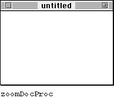
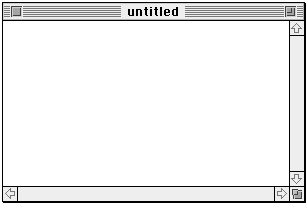
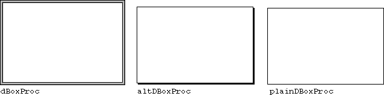
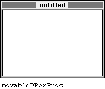
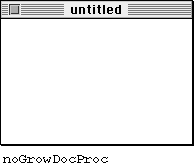
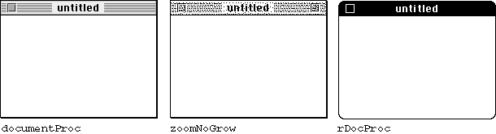

Types of Windows
Because windows have so many uses, their appearances vary. The Window Manager defines a number of window types that meet the basic needs of most applications. A window type is the general description of how a window looks and behaves. Some windows have title bars and others don't, for example, and windows can have almost any combination of the window-manipulation elements: close box, zoom box, and
size box.This section describes the nine basic window types supported by the Window Manager and their uses. You can create windows of these types by specifying one of the window type constants: zoomDocProc, dBoxProc, altDBoxProc, plainDBoxProc, movableDBoxProc, noGrowDocProc, documentProc, zoomNoGrow, and rDocProc. For instructions for creating windows, see "Creating a Window" beginning on page 4-22.
To give the user maximum flexibility and control, you can use the
zoomDocProcwindow type for your document windows. AzoomDocProcwindow supports all of the window-manipulation elements shown in Figure 4-2 on page 4-4: title bar, close box, zoom box, and size box. The Window Manager does not necessarily draw the close box and size box, however. You must call the Window Manager'sDrawGrowIconprocedure to draw the size box, and you can optionally suppress the close box when you create the window. For more information on defining a window's characteristics, see "Creating a Window" beginning on page 4-22.Figure 4-4 illustrates a window of type zoomDocProc with a close box, as drawn by the Window Manager before you add the size box and scroll bars.
Figure 4-4 A window of type zoo
mDocProc
In most cases, a window of type
zoomDocProcshould contain both a close box and a size box. When the related document contains more data than fits in the window, you activate the scroll bars and adjust them to show where in the document the user is working. Figure 4-5 illustrates a window of type zoomDocProcwith a size box and scroll bars.Figure 4-5
A window of typezoomDocProc, with size box and inactive scroll bars
You also use windows to display alert boxes and dialog boxes. This section describes the window types used for alert boxes and dialog boxes. For more thorough descriptions of the different kinds of alert boxes and dialog boxes, see the chapter "Dialog Manager" in this book.
Alert boxes and fixed-position modal dialog boxes contain no window-manipulation elements. The user cannot move, resize, zoom, or close them manually. An alert box or a modal dialog box remains on the screen as the active window until the Dialog Manager or your application removes it--usually when the user completes the interaction by clicking one of the buttons. Figure 4-6 illustrates the three window types available for alert boxes and fixed-position modal dialog boxes.
Figure 4-6 Window types for alert boxes and fixed-position modal dialog boxes

When you want to let the user move a modal dialog box window--in order, for example, to see text that might be obscured by the window--you can implement a movable modal dialog box. A movable modal dialog box cannot be resized, closed, or zoomed, but it can be moved. Figure 4-7 on the next page illustrates the
movableDBoxProcwindow type. Like a fixed-position modal dialog box, the movable modal dialog box remains active until the user completes the dialog.Figure 4-7 A window of type movableDB
oxProc
Whenever possible, avoid modal dialog boxes and instead use modeless dialog boxes, which allow the user to perform other tasks without dismissing the dialog box. Windows of type noGrowDocProc, used for displaying modeless dialog boxes, can be moved or closed but not resized or zoomed. You can implement modeless dialog boxes with other window types if necessary, but it's easier to conform to the user interface guidelines if you keep your dialog box windows as simple as possible. Figure 4-8 illustrates the modeless dialog box window.
Figure 4-8 A window of type
noGrowDocProc
The Window Manager also supports a few window types that are seldom used. The
documentProcwindow type, for example, has a title bar and supports a close box and size box but no zoom box. ThezoomNoGrowwindow type is virtually never appropriate:zoomNoGrowsupports a close box and a zoom box, but not a size box. TherDocProcwindow type is a rounded-corner window with a title bar and a close box; it is used by desk accessories. Figure 4-9 illustrates these three seldom-used window types.The window definition function defines the general appearance and behavior of a window. The system software and various Window Manager routines call a window's window definition function when they need to perform certain window-dependent actions, such as drawing or resizing a window's frame.
Figure 4-9 Seldom-used window types

The Window Manager supplies two standard window definition functions that handle the nine standard window types. A window definition function draws the window's frame, draws the close box and window title (if any), determines which region the cursor is in within the window, calculates the window's structure and content regions, draws the window's zoom box (if any), draws the window's size box (if any), and performs any special initialization or disposal tasks.
A single window definition function can support up to 16 different window types. The window definition function defines a variation code, an integer from 0 through 15, for each window type it supports.
A window definition ID is a single value incorporating both the window's definition function and its variation code. (The resource ID of the window definition function
is stored in the upper 12 bits of the integer, and the variation code is stored in the
lower 4 bits.) The window-type constants described in this section are in fact window definition IDs.You can provide your own window definition function if you need a window with unusual characteristics, as described in "The Window Definition Function" beginning
on page 4-120. Always be careful to conform window behavior to the guidelines in Macintosh Human Interface Guidelines.